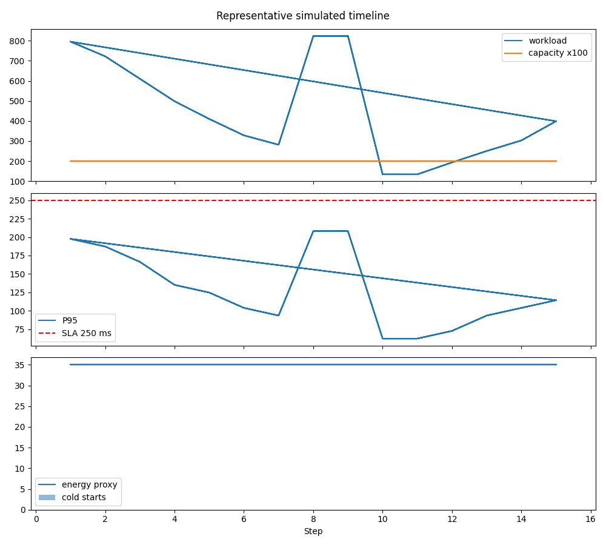
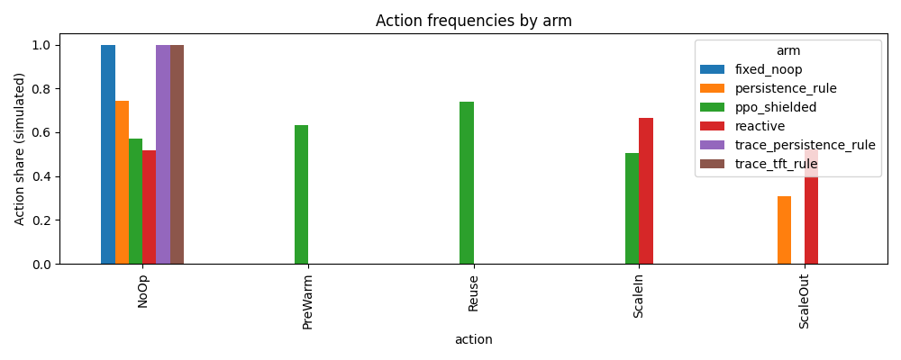

PPO Controller Dashboard
Simulated training and evaluation dashboard · smoke-trained policy, simulated metrics, no live execution
1. What it does
PPO selects a bounded container-management action from a fixed six-action set. It consumes a normalized state vector built from forecast, current workload, resource metrics, latency/SLA, cold starts, energy proxy, and recent history. It does not execute infrastructure commands; its proposal passes through the safety shield before any simulator or executor step.
Control-flow: validated state → PPO greedy_action → feedback bias → SafetyShield → simulator/dry-run/live executor. PPO is a proposal role; the shield has final authority.
2. How it is implemented
| Module | Role |
|---|---|
| rl/environment.py | Deterministic serverless simulator, lifecycle delay, capacity bounds, observation and step dynamics |
| rl/reward.py | SLA-aware normalized reward with energy, latency, cold-start, resource, underutilization and scaling terms |
| rl/policy.py | ActorCritic network with act, evaluate and greedy_action |
| rl/train_ppo.py | GAE, clipped PPO updates, best-state tracking, versioned checkpoint save/load |
| rl/evaluate_ppo.py | Policy and reactive evaluation helpers |
| experiments/synthetic_scenarios.py | ramp, burst, periodic, sparse, stress and mixed workloads |
| orchestrator/safety_shield.py | ActionValidator + SLAGuard; blocks unsafe actions to NoOp |
3. How it was trained
Trained, but smoke-level. The saved run manifest records 3 episodes per seed for seeds [42, 43, 44], not the configured 200 episodes. This is enough to test the training/checkpoint path, not enough to claim converged or superior control.
| Training item | Configured / evidence |
|---|---|
| Algorithm | PPO with actor-critic and clipped surrogate objective |
| Evidence episodes/seed | 3 |
| Seeds | 42, 43, 44 |
| Batch size | 64 |
| Learning rate | 0.0003 |
| Gamma | 0.99 |
| GAE lambda | 0.95 |
| Clip ratio | 0.2 |
| Epochs per update | 4 |
| Minibatch size | 64 |
| Entropy coefficient | 0.01 |
| Config SHA-256 | aaf3f0565875491e3160ea2c62a13a038ba9da11192453cad1155678a59b5464 |
| Checkpoint | models/ppo_policy.pt |
Training keeps the best validation state by mean episode reward and saves a versioned checkpoint with model state, observation dimension, action count, seed, episode count and reward weights. Loading rejects newer checkpoint versions and shape mismatches.
4. How it was tested
Evaluation used 48-step synthetic scenarios with a 70/30 chronological split and 15-step test rollouts, plus a held-out Azure trace segment. All reward, latency, energy, cold-start and capacity values are simulated proxies.
| Test item | Evidence |
|---|---|
| Synthetic scenarios | ramp, burst, periodic, sparse, stress, mixed |
| Seeds | 42, 43, 44 |
| Arms | fixed_noop, persistence_rule, ppo_shielded, reactive, trace_persistence_rule, trace_tft_rule |
| Trace inputs | data/processed/azure_features.csv |
| TFT path | attempted=True, available=True |
| Resource columns | simulated_from_invocations_when_absent |
| Trace scale factor | 0.0011 |
| Component suite | M4 recorded 134 passed, 1 warning |
5. Input contract
The policy input is a bounded normalized float32[10] observation. Names come directly from rl.environment.OBS_NAMES.
| Index | Observation feature |
|---|---|
| 0 | predicted_workload |
| 1 | current_workload |
| 2 | cpu |
| 3 | memory |
| 4 | latency |
| 5 | p95_latency |
| 6 | active_containers |
| 7 | cold_starts |
| 8 | energy |
| 9 | sla_margin |
{
"predicted_workload": 0.4,
"current_workload": 0.45,
"cpu": 0.5,
"memory": 0.55,
"latency": 0.6,
"p95_latency": 0.65,
"active_containers": 0.7,
"cold_starts": 0.75,
"energy": 0.8,
"sla_margin": 0.85
}
6. Output contract
The controller returns one integer action ID. The environment maps it to a named action and returns (obs, reward, done, info).
| Action ID | Meaning |
|---|---|
| 0 | NoOp |
| 1 | PreWarm |
| 2 | ScaleOut |
| 3 | Reuse |
| 4 | ScaleIn |
| 5 | Terminate |
{
"greedy_action": 2,
"action_name": "ScaleOut",
"after_shield": {
"action": "ScaleOut",
"allowed": true,
"reason_code": "ok"
},
"step_result": {
"obs": "float32[10]",
"reward": -0.8421,
"done": false,
"info": {
"action": "ScaleOut",
"capacity": 8,
"p95_latency_ms": 132.5,
"sla_violated": false,
"reward_components": {
"energy": -0.12,
"latency": -0.08,
"sla_violation": 0.0
}
}
}
}
7. Reward and safety
| Reward component | Weight | Note |
|---|---|---|
| energy | 1.0000 | |
| latency | 1.0000 | |
| cold_start | 1.5000 | |
| resource | 0.5000 | |
| underutil | 0.3000 | |
| sla_violation | 5.0000 | highest penalty |
ActionValidatorchecks legal action IDs, authorization, plan conflicts and capacity bounds.SLAGuardblocks ScaleIn/Terminate when P95 is near the SLA threshold.SafetyShield.filterconverts any block into NoOp with a reason code.- Capacity is clamped to min
2, max30, max change/cycle5.
8. Simulated evaluation results
| Arm | N | Reward | SLA viol. | Energy W proxy | Capacity | Cold starts | P95 ms proxy | Shield |
|---|---|---|---|---|---|---|---|---|
| fixed_noop | 18 | -1.1564 | 25.56% | 35.00 | 2.00 | 0.00 | 196.91 | 0.00% |
| persistence_rule | 18 | -1.5315 | 4.44% | 227.83 | 14.86 | 1.28 | 100.19 | 0.00% |
| ppo_shielded | 18 | -1.1564 | 25.56% | 35.00 | 2.00 | 0.00 | 196.91 | 11.48% |
| reactive | 18 | -1.7725 | 5.56% | 222.50 | 14.50 | 2.17 | 97.41 | 0.00% |
| trace_persistence_rule | 1 | -0.6384 | 0.00% | 35.00 | 2.00 | 0.00 | 171.38 | 0.00% |
| trace_tft_rule | 1 | -0.6384 | 0.00% | 35.00 | 2.00 | 0.00 | 171.38 | 0.00% |
Interpretation: with only three training episodes, ppo_shielded has the same reward/SLA/energy/capacity values as fixed_noop. This is a NoOp-like smoke policy, not evidence of superior control. Rule/reactive arms reduce simulated SLA violations by provisioning more capacity at higher simulated energy/cold-start cost.



9. Live-use boundary
- PPO never forms shell/Kubernetes/OpenFaaS/Docker commands.
- Only the executor adapter can form bounded commands after shield approval.
- Execution defaults remain
enabled=false,dry_run=true,allow_live=false. - Live latency, real hardware energy, real cold starts and deployed feedback were not measured.
10. Limitations
- Training was deliberately short; no 200-episode production run is evidenced.
- Latency, energy, cold-start and capacity outcomes come from simulator proxies, not live infrastructure.
- The Azure segment was scaled for simulator capacity; trace TFT/persistence rows are single-segment observations.
- No confidence interval over many long training runs is available for PPO itself.
- M8 PPO arms are consolidated simulation results and do not validate live execution (E7 deferred).
11. Reproduce
py -m pytest -q tests/test_rl.py tests/test_m5.py tests/test_orchestrator.py py -m experiments.evaluate_ppo_m5 --out-dir results/ppo/m5 py -m scripts.generate_component_dashboards